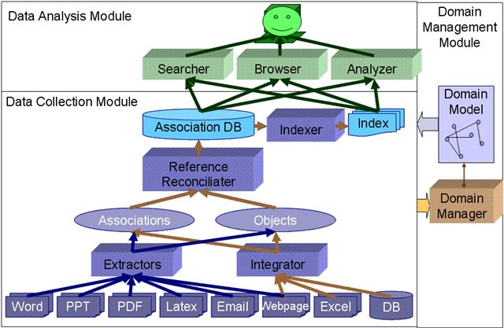

Personal information management (PIM) is a subject of growing interest to the data management community. We are building the Semex System that offers users a flexible platform for personal information management. First, Semex organizes data in a semantically meaningful way by providing a domain model consisting of classes and associations between the classes. Second, Semex leverages the PIM environment to support on-the-fly integration of personal data and public data. Based on the logical view of personal information, we allow the user to browse information by association and we pursue enriched searching experiences. (See overview papers [1,2] and demo [3])
Click here to see what you can do with Semex. Here is a trial version of Semex.

Since the data we manage in PIM is very heterogeneous and we need to support multiple sources of associations, it is crucial that the data instances mesh together seamlessly. To truly follow the chains of associations and find all the information about a particular individual (or publication, conference, etc.), Semex needs to be able to reconcile the many references to the same real-world object.
Reference reconciliation in PIM has three challenges: First, the domain model consists multiple classes and we need to reconcile references of multiple classes. Considering each class separately will miss the rich information hidden behind across-class associations. Second, each extracted instance contains very limited information, i.e., contains values for only a few atomic attributes. Third, some attributes are multi-valued, so the fact that two attribute values are different does not imply that the two references refer to different real-world objects.
Our intuition is to exploit the rich information hidden behind the object-association network. We propose using context information, similarities computed on related entities, and enriched references during reconciliation. (See paper [4].)
In a personal information management system, it is important that users are able to specify varying degrees of structure in their queries, and are able to compose queries that contain keywords and that are structure-aware (e.g., “a Paper with title ‘SEMEX’ authored by ‘Dong’ and published in ‘CIDR 2005’ ”). To efficiently answer such queries, we designed a generic index for loosely-coupled heterogeneous data. (See paper [7].)
The index extends the traditional inverted list by capturing not only text values, but also structural information when it is present, including attributes of instances, associations between instances, synonyms on schema elements, and hierarchies of schema elements. This index not only speeds up answering queries that combine keywords and structural information, but also improves keyword search by returning implicitly relevant objects, which are associated with objects that explicitly contain the keywords in attribute values.
SEMEX manages both structured data (extracted instances and associations) and unstructured data (files that contain rich text, such as Word documents and webpages). The goal of SEMEX is to provide a uniform interface for users to query the information on one's desktop, regardless of their formats. Querying structured and unstructured data in isolation has been the main subject of research for the fields of Databases and Information Retrieval. Recently the Database Community has studied the problem of answering keyword queries on structured data such as relational data or XML data. The only combination that has not been fully explored is answering structured queries on unstructured data.
Traditional approaches solve this problem by first extracting structure from the text. We instead proposed constructing a keyword query from a given structured query, and submitting the query to the search engine for retrieving unstructured data (see paper [6]). The key of the solution is to model a query as a graph of objects and associations, and then select the node and edge labels that best summarize the graph.
Semex comes with a generic domain model (see an example) and offers several ways of manually personalizing it. For example, Semex users can extend their domain model by example. The browsing pattern can, in itself, already define a new class or association in the domain model. Alternatively, the user may refine, modify or generalize the pattern or combine it with other patterns to create the desired class. Ultimately, we would like the system to identify interesting clusters of information, and propose extensions based on them.
One specific problem in domain model personalization is that sometimes a precise domain model does not exist, either because we don't know what it is or because one does not exist. Also, we may prefer not to model the domain in such level of detail because an overly complex model may be a burden on personal users. To address these needs, we propose the concept of malleable schemas as a modeling tool that enables us to capture the important aspects of the domain at modeling time without having to commit to a very strict schema. (See paper [5].)